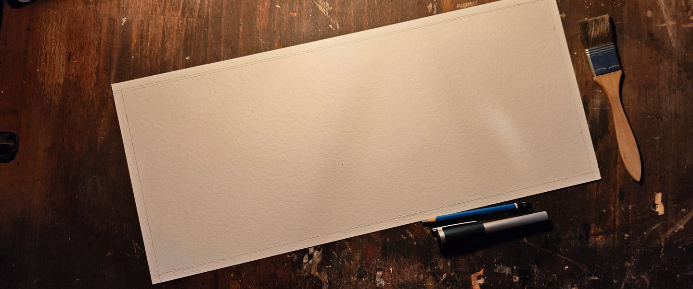
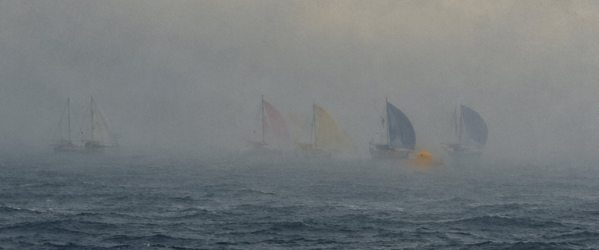
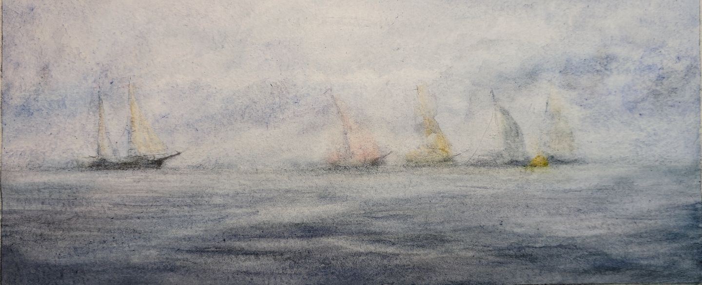
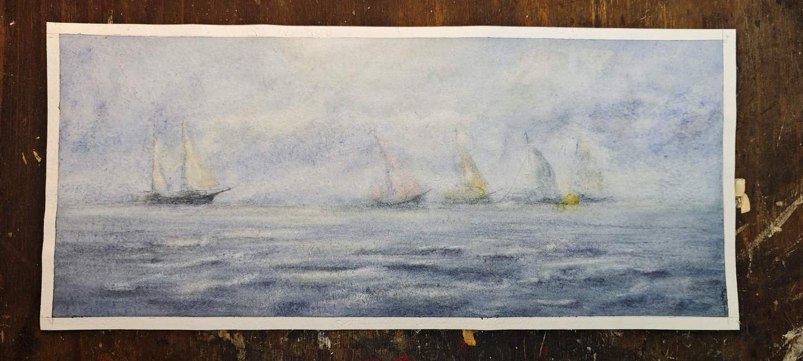

Diario
Cincuenta y tres centímetros de silencio
Corté la hoja a 55 centímetros y dejé un centímetro de cinta en cada borde. El interior mide 53 × 22,18: el cinemascope exacto. Antes de la primera mancha, el formato ya decidió qué va a mirar.
Publicado

La hoja está sobre la mesa, blanca, con la cinta todavía pegada. La medí dos veces antes de cortar: 55 centímetros de ancho, 24,18 de alto. Un centímetro de cinta en los cuatro bordes. Adentro quedan 53 × 22,18. La cuenta es una sola: 53 dividido 2,39. El resultado no es un capricho de calculadora; es la proporción exacta del cinemascope.
El formato no se elige al final, cuando la obra ya está seca. Se elige antes, como se elige el papel o el pincel. Un cuadro cuadrado mira de frente; un cinemascope mira de costado. El primero encierra; el segundo mide la distancia entre una figura y lo que la rodea. Por eso el ancho no se rellena: se decide.
El cinemascope nació en 1953 con 2.55:1, pasó a 2.35 y hoy se proyecta en 2.39. En Blade Runner 2049, Roger Deakins rodó con ópticas esféricas, protegió un open gate de 1.55 y compuso para 2.39; la versión IMAX abría a 1.90. No copio el neón ni el naranja de la película. Me interesa otra cosa: que el formato permita que una persona sea pequeña sin desaparecer.
La foto de los veleros entre la niebla es la prueba. Cuatro barcos aparecen de a poco, grises, con las velas apenas teñidas de rojo, amarillo y azul. El agua oscura ocupa el primer plano; arriba, la niebla borra el horizonte y deja el cielo sin referencia. En 2.39, esa distancia tiene lugar. En un cuadrado, los veleros serían el tema; en scope, el tema es lo que los separa.

La cinta de un centímetro no es un descarte. Es el borde que protege la composición y, al mismo tiempo, la sostiene. Cuando el pincel se acerca al límite, la cinta recuerda que hay un fuera de campo. El interior de 53 × 22,18 es el campo; lo que queda afuera también cuenta. Pintar en cinemascope es aceptar que el vacío no es un error: es una parte del cuadro.
La obra ya comenzó: la Marina. Hay una hoja preparada, una imagen elegida y una teoría que se pone a prueba. Esta entrada queda abierta: cuando la obra avance, vuelvo con lo que el papel haya decidido. Por ahora, el formato ya está dicho. El resto es agua.

El cinemascope no ensancha la mirada: obliga a elegir qué queda en el centro y qué se confía al silencio.
Fuentes: Roger Deakins, entrevista en British Cinematographer (2017); ficha técnica de Blade Runner 2049 (ASC/IMDb); Widescreen Museum, historia del CinemaScope.
La Marina, terminada
La entrada quedó abierta el 15 de noviembre, con la hoja todavía húmeda y una promesa: volver cuando el papel decidiera. Volví. La Marina está seca, con los cuatro veleros donde los dejó la niebla. La foto no recorta nada: deja la mesa de madera, el borde blanco y la luz del estudio. La obra mide 53 × 22,18; la mesa, alrededor, mide lo que mide el afuera.

Pensé en William Turner mientras el papel se secaba. No en el Turner de las grandes máquinas, sino en el de las acuarelas tardías: la luz entrando en el agua, las sombras sin contorno, el horizonte a punto de borrarse. En El Temerario, el sol pone el barco en llamas y la sombra lo devuelve al río; en las marinas de niebla, el barco es apenas una mancha que la luz sostiene. Acá pasa lo mismo: los veleros no están pintados para verse, sino para que la niebla los deje aparecer. La luz no ilumina el mar: lo deshace. La sombra no lo cierra: le da aire.
La foto conserva la mesa porque el afuera también pinta. El borde blanco, la veta, la sombra de la hoja: todo eso sostiene el rectángulo. La Marina queda terminada, pero no cerrada. Un cuadro siempre sigue abierto en el lado de la luz.
Turner lo sabía: la luz no ilumina el mar, lo disuelve. La sombra es el borde donde el agua respira.
Fuentes: J. M. W. Turner, marinas y acuarelas tardías; The Fighting Temeraire (1839), National Gallery, Londres.